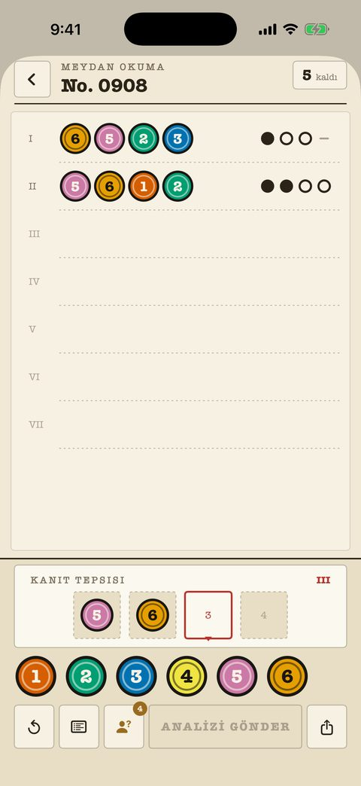

Klasik davalar
Acemiden ustaya 240 dosya, her biri klasördeki numaralı bir sayfa. Deneme sayacı sağ üstte; işaretler saf mürekkep — nokta, halka, çizgi — ve asla renge bağlı değil.
- Geçmiş her analiz çapraz kontrol için sayfada kalır.
- Tahtadaki notlar elenen ve doğrulanan renkleri işaretler.
- "Şekil işaretleri" ayarı her renge kendi şeklini verir.
- İlk 40 dosya ücretsiz.